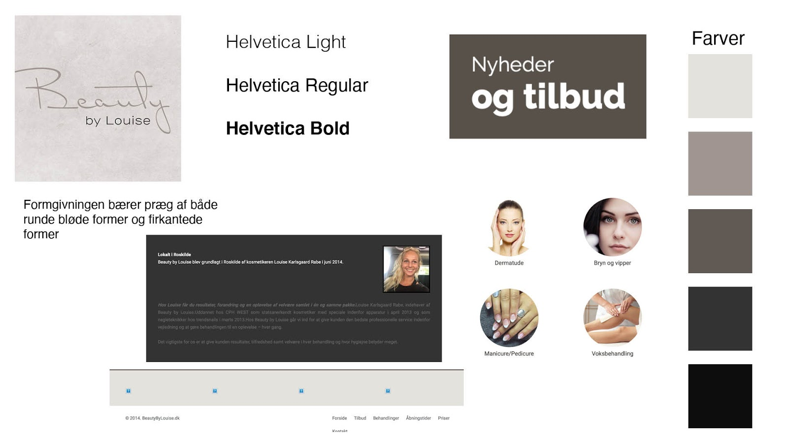
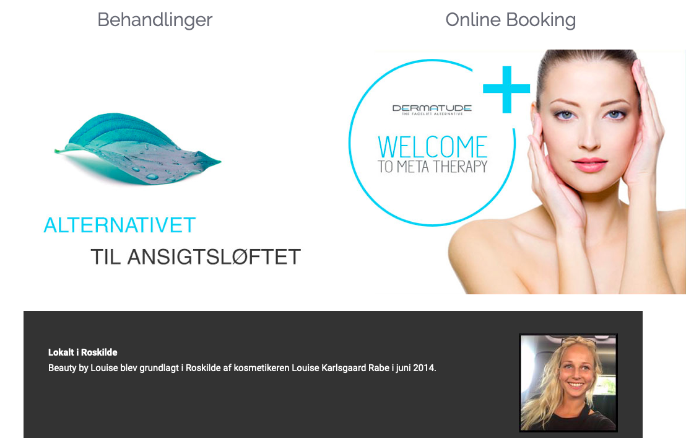
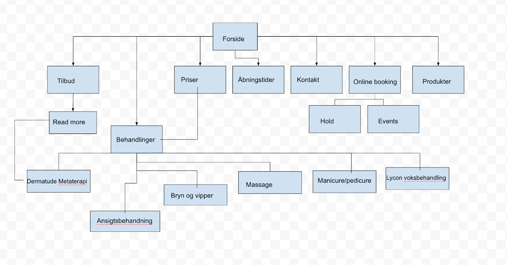
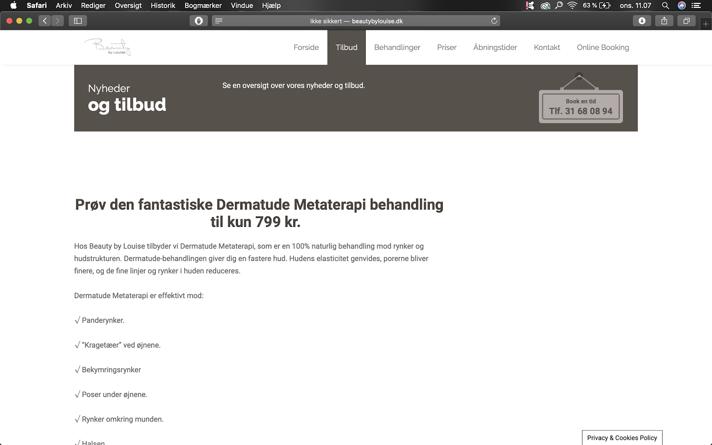
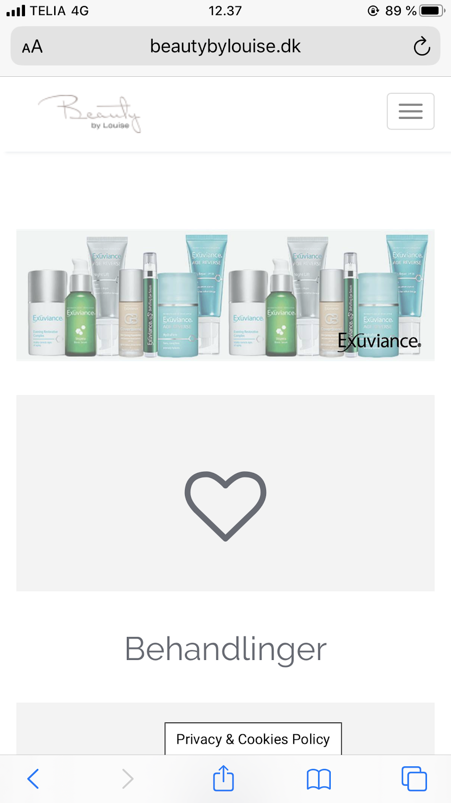
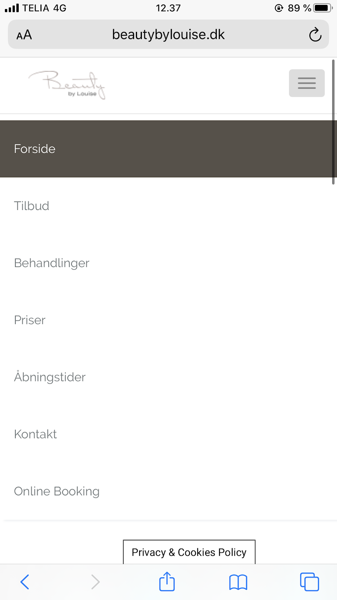
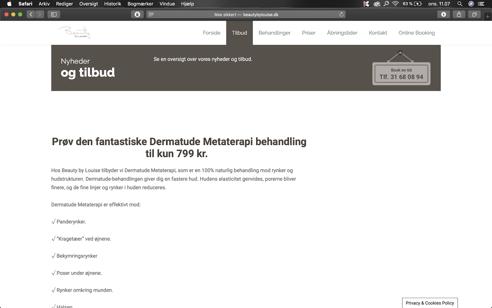
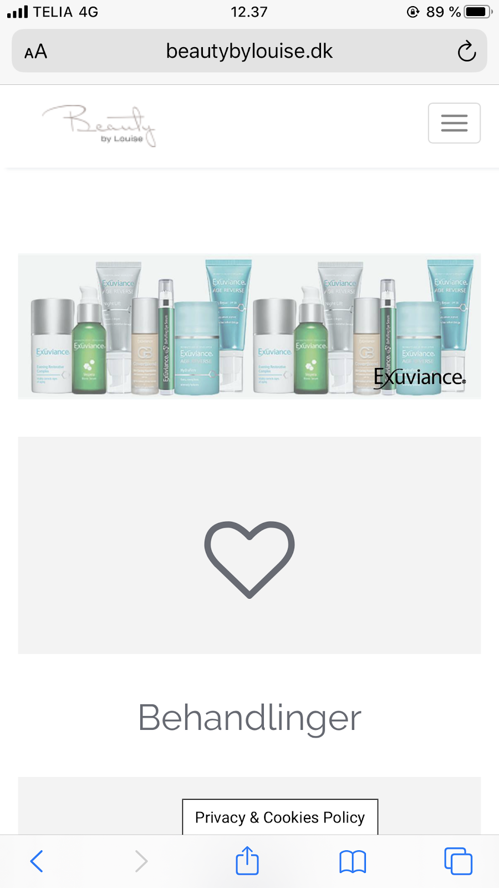
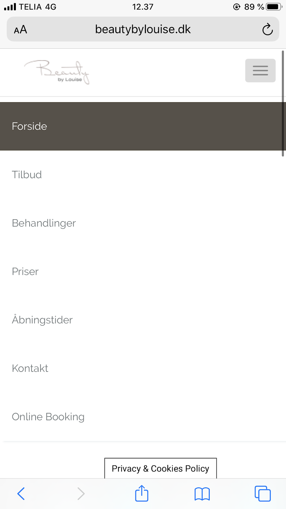

Analyse af eksisterende site
Styletile
Ovenstående styletile viser farverne og fontene fra det eksisterende site. Her bliver der altså udlukkende brugt meget basale farver som sort og hvid, og ellers anvender de grå og brune nuancher. I forhold til fontene anvendes der den helt almindelige Helvetica. Vi har analyseret og vurderet, at sidens stil indebærer mange basale elementer, som resultere i et meget almindeligt site som ikke skiller sig ud fra konkurrenternes.
Fotostil
Stock billeder og selfie - går ikke sammen. Nedenstående billede illustrerer hvordan Louise både har et selfie på hendes hjemmeside og stockbilleder, der rer meget kliniske og professionelle. To meget store kontraster.
Sitemap
Wireframe/screenshots af eksisterende site
 





Funktionalitetsliste/indholdsoversigt
Forside
- Tilbud
- Behandlinger
- Priser
- Åbningstider
- Kontakt
- Online booking
- Produkter
Brugerrejser/flow/tasks - hvad kan brugeren på sitet. Hvad er de vigtigste brugerrejser på sitet?
Den vigtigste brugerrejse på sitet, kan vurderes at være at gå fra at læse om behandlingerne, se priser og derefter booke en tid via online booking genvejen på sitet. Her kan man som sagt læse om hver enkelt behandling, se produkter der bliver brugt i behandlingerne og derudover købe dem på sitet, så kan man se priser, se adressen, skrive privat besked til indehaveren og online booke til både behandling, hold og events. Hos Beauty By Louise kan du online booke din behandling. Du klikker dig nemt gennem 5 steps. Du kan vælge at oprette dig som bruger, og så kan du se dine tider og behandlinger, og så kan Beauty By Louise også se at det er netop dig, som har bestilt.